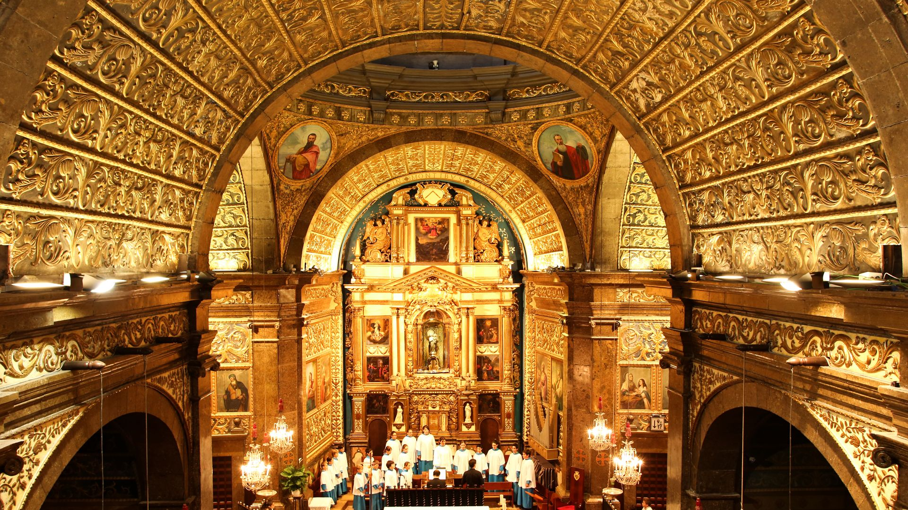
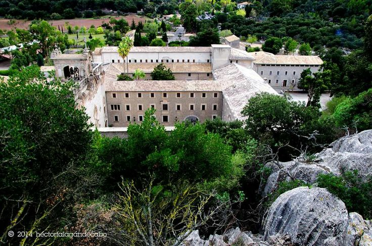

En la capilla mayor de la basílica barroca se venera a la patrona de Mallorca,
una talla medieval de la Virgen de color oscuro que, según la leyenda,
fue hallada en el bosque por un joven pastor llamado Lluc

En la capilla mayor de la basílica barroca se venera a la patrona de Mallorca,
una talla medieval de la Virgen de color oscuro que, según la leyenda,
fue hallada en el bosque por un joven pastor llamado Lluc

La Basílica, la figura de La Moreneta, el Museo de Lluc y el Jardín Botánico